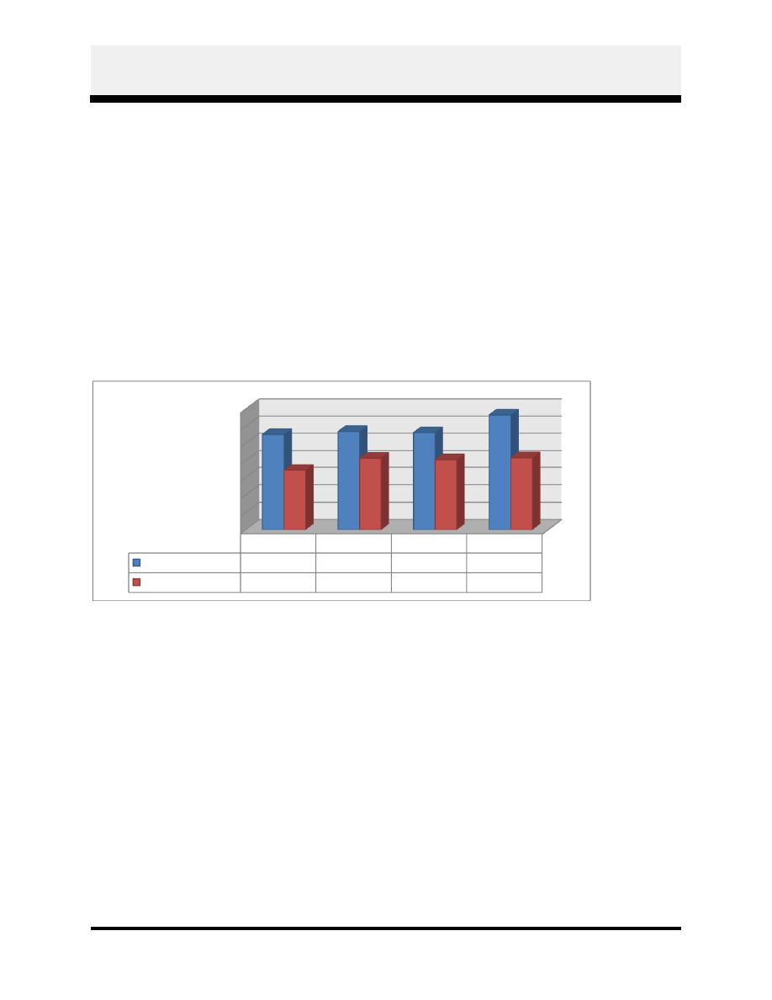
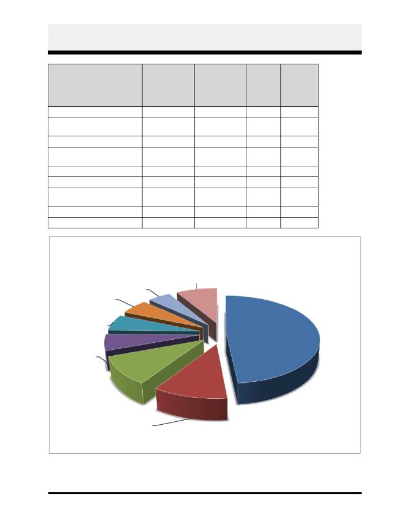
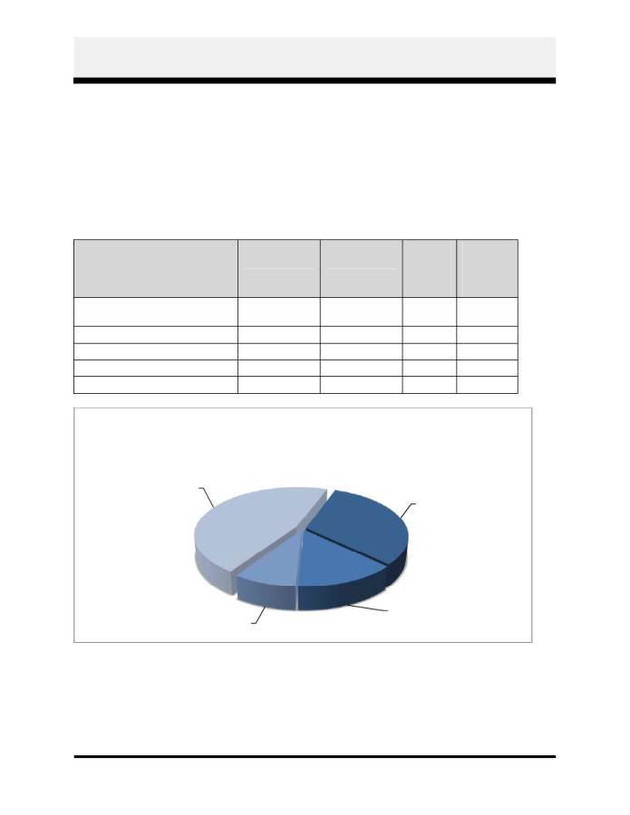
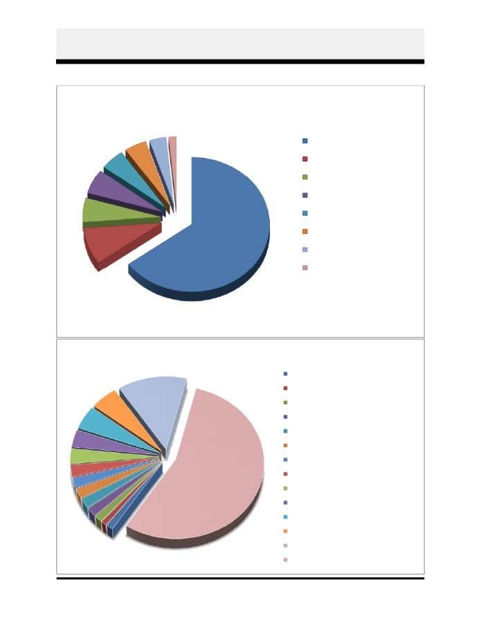

County Administrator's Budget Message
Page A-1
To: The Members of the Board of Supervisors
The proposed Fiscal Year 2014 budget is presented to you and the citizens of James City County
in this document. The County has a two year budget process that allows the Board to adopt a
budget for immediate implementation and a second year plan. The second year of the budget is
reviewed carefully to assure it is still appropriate. If circumstances have changed, the plan is
adjusted accordingly. The adopted plan was approved at $167,930,000. It included very few
new initiatives and was based on conservative revenue estimates due to uncertainty in the
federal, state and local economies.
I have used that plan as the chart for spending priorities and have only made slight changes to
that plan. I am pleased to report the economy has done better than expected and increased
revenue projections are included in this budget.
This proposed budget increases 3.1% over the FY2013 adopted budget to $171,500,000 and is
presented with the following assumptions:
No tax rate increase
No fee increases
No reassessment in real property
No increase in debt.
This budget includes funds to address the previously identified priority of providing a salary
increase to our employees. We are pleased that the increase in revenues beyond the planned
amount allows funding for a similar pay increase to the School division’s teachers and support
staff, which has also been identified as a budget priority. Staying with a conservative spending
approach, the majority of the remaining resources have been allocated to expenditures that are of
a non-recurring nature, such as capital projects, or those that do not require a commitment
beyond one year, such as matching dollars to the State for road work.
Cautious Optimism for Slow and Steady Growth
Since FY2010, which represents the County’s economic low point in the recession, the County
has seen slow, but steady growth. The County, over the past few years, has conservatively
forecast an economic recovery, hedging for uncertainties as the national and global economies
have struggled to find their footing. This budget continues that conservative forecast.
I am cautiously optimistic that the positive trends we are now seeing will continue. While we
have budgeted conservatively in this budget year, as the economy improves, the County will
need to start restoring some of the cuts that were made several years ago in order to maintain the
quality of life I feel our residents expect.
The County’s population has continued to grow, even during the economic downturn, although
at a slower rate. With the most recent population estimates, James City County is the fastest

County Administrator's Budget Message
Page A-2
growing locality within the Hampton Roads community and remains one of the fastest growing
localities in the State.
For the past three fiscal years, the County’s local economy has improved as evidenced by the
County’s sales, meals and lodging tax collections. Although regular inflationary pressures
account for some of this increase, the rate of growth has exceeded the rate of inflation. Both
citizens and visitors are investing in our community by shopping in our stores, eating in our
restaurants and staying at our hotels and timeshares.
Investments in tourism, such as the
Christmas in Williamsburg marketing campaign, the return of the LPGA tournament and
increased sporting events have all contributed to this growth. New retail establishments, such as
Settler’s Market, should help the positive trend continue.
2005
2006
2007
2008
2009
2010
2011
2012
2013
2014
Population Estimates* 56,463 58,893 60,867 62,394 63,135 67,326 68,179 68,971 70,781 72,621
4.3%
3.4%
2.5%
1.2%
6.6%
1.3%
1.2%
2.6%
2.6%
30,000
35,000
40,000
45,000
50,000
55,000
60,000
65,000
70,000
75,000
Population Estimates and % Change Per Year
*2010 reflects adjusted Census for 7/1
Source: Planning Division
$0.0
$1.0
$2.0
$3.0
$4.0
$5.0
$6.0
$7.0
$8.0
$9.0
$10.0
2010
2011
2012
2013
Sales
$8,421,956
$8,924,450
$9,322,142
$9,700,000
Meals
$5,535,946
$5,617,380
$5,982,787
$6,200,000
Lodging
$1,859,809
$1,860,380
$2,024,361
$2,100,000
6.0%
4.5%
4.1%
1.5%
6.5%
3.6%
0.0%
8.8%
3.7%
M
ill
io
ns

County Administrator's Budget Message
Page A-3
The housing market had been a driving factor for the national economic downturn and James
City County did not escape unscathed. Real estate values fell, foreclosures increased and new
construction dropped. The last general reassessment of real estate occurred for FY2013 and
lowered values of residential real estate 5.67 percent. However, the County did fare better than
many other communities and the County is starting to see a recovery, with building permits
beginning to rise, increased sales of existing homes and stabilizing prices. The County assesses
real estate every two years and there is no general reassessment for FY2014. I expect the next
general reassessment for FY2015 to be reflective of a stabilizing real estate base and do not
expect to see decreases similar to those that occurred in FY2013. Related revenues, such as
recordation taxes and building permits, particularly in the past six months, are showing signs of
sustained growth.
These indicators, in addition to new real estate development and additional vehicles added to the
County’s personal property tax base, point toward a continued path of slow and steady growth.
$0.0
$0.2
$0.4
$0.6
$0.8
$1.0
$1.2
$1.4
2010
2011
2012
2013
Recordation Taxes $1,100,442
$1,132,789
$1,121,581
$1,325,000
Building Permits
$681,675
$825,608
$806,434
$830,000
2.9%
(1.0%)
18.1%
21.1%
(2.3%)
2.9%
M
ill
io
ns

County Administrator's Budget Message
Page A-4
GENERAL FUND
Revenues
General Fund revenues are estimated to increase 3.1% above the FY2013 adopted figures and
2.1% above the FY2014 Plan amount. These revenue assumptions include no new or increased
taxes or fees. Increases in revenues are a result of continued slow and steady growth in both the
economy and the community.
The increase in real property tax revenues of 1.3% comes entirely from new development.
Personal Property taxes have also increased with a combination of increased value and a 3%
increase in the number of autos and trucks.
Consumer spending, as reflected in sales, meals and lodging taxes are all increased by 3% over
current year projections. Business and Professional Licenses are also increased by 3% over
current year projections based on increased retail, services and construction activity. Revenues
from fees and charges for services are up 5.5%, mostly related to increased calls for service for
Advanced Life Support/Basic Life Support (ALS/BLS) transports.
State revenues increase, mostly due to increased estimates of Statewide Sales Tax as reflected in
the 5.2% increase in Sales Tax for Education.

County Administrator's Budget Message
Page A-5
FY2013
Adopted
FY2014
Proposed
Share
of
FY2014
Budget
%
Change
from
FY2013
Real Estate
$ 81,925,000
$ 83,000,000
48.4%
1.3%
Sales, Meals, Lodging
Taxes
$ 17,025,000
$ 18,565,000
10.8%
9.0%
Personal Property
$ 16,560,000
$ 17,625,000
10.2%
6.4%
State Sales Tax for
Schools
$ 9,822,908
$ 10,337,543
6.0%
5.2%
State Car Tax Relief
$ 9,770,137
$ 9,770,137
5.9%
0.0%
Other Property Taxes
$ 9,635,000
$ 9,797,500
5.7%
1.7%
Licenses, Permits and
Fees
$ 7,245,000
$ 7,950,000
4.6%
9.7%
Other Revenue
$ 14,284,180
$ 14,454,820
8.4%
1.2%
$166,267,225
$171,500,000
100.0%
3.1%
Real Estate , 48.4%
Sales, Meals, Lodging
Taxes, 10.8%
Personal Property,
10.2%
State Sales Tax for
Schools, 6.0%
State Car Tax Relief,
5.9%
Other Property
Taxes, 5.7%
Licenses, Permits
and Fees, 4.6%
Other Revenue, 8.4%
FY2014 General Fund Sources of
Revenue by Category

County Administrator's Budget Message
Page A-6
Personnel and Compensation
Compensation
Performance Increases
My priority in this budget, as I stated in the first year of the biennium budget, is to provide a base
salary increase for eligible County employees. Employees last received a performance increase
in FY2009. Most other localities in the Hampton Roads area have given a base salary increase
during this time period. A salary increase for County employees is already part of the FY2014
Budget Plan and sufficient funds are available to increase both County and School staff’s salaries
by 3% effective July 1, 2013.
Maintaining the Compensation Plan
To maintain our current market-based compensation plan, I am recommending two adjustments.
First, I propose that we add 5.7% to the end of each salary range. This will restore employees’
salaries to the same relationship to the top of their ranges that they had before receiving the 5.7%
VRS offset, which did not increase their take-home pay. This will not cost any additional money
in FY2014 and will be reevaluated as part of the Compensation Plan Review during the fiscal
year. Second, I am recommending that, after the performance increases have been applied, we
move all salary ranges by 2%. This will help keep our ranges, and therefore our starting salaries,
competitive. Competitive salary ranges assist with employee recruitment and retention. This
structure adjustment will cost about $30,000.
My proposed budget continues to fund career ladder advancements—salary adjustments for
employees who complete the requirements to advance along a career ladder, such as Police
Officer I to Police Officer II. It also includes market adjustments to the Deputy Fire and Police
Chief positions, which will help bring their salary ranges in line with the market but will not
affect their actual salaries.
Benefits
Health Insurance
Health insurance costs continue to rise as the result of claims experience, medical inflation, and
new Health Care Reform fees that take effect in 2014. These costs have been included in our
health insurance premiums. This budget proposes a 10% increase in the County’s contribution
towards health insurance premiums and an average increase in employee contribution of about
9%, depending on plan. So that we are proactive in managing costs and identifying cost savings,
I have increased our health insurance premiums to provide funding for a benefits consultant to
help the County and Schools go out to bid for health insurance, comply with Health Care Reform
requirements and identify cost savings. This spreads the cost of the consultant out to all entities
who participate in our health insurance pool and the consultant will be paid from those pooled
funds.

County Administrator's Budget Message
Page A-7
The budget also funds health insurance premiums for 16 positions whose incumbents we
anticipate will work an average of between 30 and 40 hours per week in calendar year 2013. This
is a new requirement of the Health Care Reform Law and is effective January 1, 2014. Ten of
these positions are part-time regular positions with incumbents in them. We analyzed temporary
positions that have been averaging 30 hours per week. Six of those temporary positions are
recommended for health insurance funding because the continuity of having the same individual
perform the duties is important to the quality of the work, such as Park Rangers and Before and
After School and Summer Camp Assistant Site Supervisors.
Other Benefits
No other benefit costs increase.
Positions
Only one new regular position is included in the proposed budget—the full-time regular
Secretary position for the Police Department that is already included in the two-year budget plan.
This position is needed to take administrative duties from sworn officers freeing them up to
perform police work. Some part-time and temporary hours have been added to provide needed
assistance in several departments. A number of requests for positions were analyzed and it was
determined not to add them this year, but several will be likely for FY2015. And where we
could no longer make a direct correlation between grant funding and a particular position, I have
proposed changing the position type from Limited Term to Regular.
Recognition
In our ongoing organizational development activities, we have identified department
performance recognition as a necessary and valuable tool.
We have developed a minimum
standard for department recognition programs and all departments have developed and
implemented their own program. This budget includes $17,000 to support those programs. This
is the aggregate amount for all departments and a proportional piece is found in each
department’s budget. The inclusion of funds in each department’s budget will ensure that all
departments’ recognition programs are supported and that funding is equitable among
departments.
These programs are important tools for reinforcing desired outcomes and
behaviors and retention of high performers and will help us to maintain the high quality of our
staff.
Non Personnel-Related County Operating Expenditures
Over the past several years, the County has been retrofitting buildings with more energy efficient
heating and lighting elements.
Leadership in Energy and Environmental Design (LEED)
Certifications for the renovations to Building D, the new Fire Administration building, and the
new Police building have all resulted in reduced energy costs per square foot.

County Administrator's Budget Message
Page A-8
FY2014 will also begin the five-year update to the Comprehensive Planning process, which will
include at a minimum, the Land Use section of the Plan. The proposed budget includes funding
for a community survey so the County can evaluate progress made since the last Comprehensive
Plan update and plan for the next five years.
This budget is also reflective of the elimination of the Local Aid to State Government, where the
County returned money to the State for programs where the State provides support to localities
for areas such as Constitutional Officers and Police departments. The savings to the General
fund is $149,200.
FY2013
Adopted
FY2014
Proposed
Share
of
FY2014
Budget
%
Change
from
FY2013
County Operating
Departments
$ 52,204,109
$ 54,278,269
31.6%
4.0%
Capital/Debt/Nondepartmental
$ 23,577,097
$ 23,304,701
13.6%
-1.2%
Outside Agencies/Other
$ 13,796,514
$ 14,562,431
8.5%
5.6%
WJCC Schools - Operating
$ 76,689,505
$ 79,354,599
46.3%
3.5%
$166,267,225
$171,500,000
100.0%
3.1%
County Operating
Departments
31.6%
Capital/Debt/
Nondepartmental
13.6%
Outside
Agencies/Other
8.5%
WJCC Schools -
Operating
46.3%
FY2014 General Fund Spending
by Category

County Administrator's Budget Message
Page A-9
Education
The County’s educational system plays an important role in the County achieving its community
vision to have healthy minds and healthy bodies. The County shares local school funding with
the City of Williamsburg and will pay 90.46% of that cost in FY2014. The School
Superintendent has presented a proposed budget to the School Board that includes an increase of
$2,665,094 in County funds to be contributed to the operations of the Williamsburg-James City
County Schools. This recommendation fully funds that request.
Outside Agencies
Funding requests from Outside Agencies are critically reviewed by a variety of staff. In each
assessment, the County determines if our funds are appropriately used and if the service received
continues to be a benefit to the community. Most Outside Agency requests were funded at the
FY2014 Plan amount.
Community Service Agencies like Avalon and Williamsburg Meals on Wheels work in
collaboration with the County to provide safety net services for the County’s neediest citizens.
One of the programs in this area, the RIDES program, is a collaboration of local area senior
transportation providers and provides simple, affordable access to health care services.
Previously, this was included as part of the Historic Triangle Senior Center. It is now shown
separately. Funding for the Historic Triangle Senior Center for their activity programs continues
at its planned amount.
Business and Regional Associations are important partners; a slight increase in funding has
been allocated to the Peninsula Council for Workforce Development.
Educational and Environmental agency requests include a slight increase in funding for the
Hampton Roads Planning District Commission.
Public Safety Agency budget requests include increased funding to the James City-Bruton
Volunteer Fire Department and the JCC Volunteer Rescue Squad.
The Health Services and Regional Entities category includes agencies that receive relatively
significant levels of County funding, such as Olde Towne Medical Center, Williamsburg
Regional Library (WRL), Williamsburg Area Transport Authority (WATA), Virginia Peninsula
Regional Jail, Merrimac Center, Colonial Behavioral Health, and the Peninsula Public Health
Department.
Many of these agencies are allocated increased funding as many are also
implementing some pay increases for their staff.
CAPITAL PROJECTS FUND
The Capital Projects Fund includes both a one-year FY2014 Capital Budget and a four-year
Capital Improvement Plan. The Capital Budget for FY2014 totals $6,109,000 and does not
include any debt financing of projects; it is funded with cash from ongoing revenues, anticipated
year end General Fund balance and one-time revenues.

County Administrator's Budget Message
Page A-10
Over $2,000,000 in funding is provided to the School division for a variety of school
rehabilitation projects, HVAC projects, and technology upgrades.
County projects include increased funding for the replacement Fire Station #4.
This is for
VDOT and soil treatment requirements and I did not feel that compromising the functionality of
the Fire Station was appropriate in order to stay within the original plan amount. Other Public
Safety projects include a replacement medic unit and replacement Mobile Data Terminals for
police, fire, emergency medical, and sheriff vehicles.
Aging analog cameras used to cover public meetings will be replaced with digital technology as
well as the monitors and projectors to receive digital feeds. This continues the County’s efforts
to switch from analog to digital broadcasting since the 2009 digital TV transition. Funding is
also provided for increased video capabilities in the new meeting space in Building D, which will
allow us to supplant the limited work session space currently used in Building F.
Infrastructure improvements at both Chickahominy Riverfront Park and Jamestown Beach
account for the majority of capital funding allocations to Parks and Recreation projects.
Investments in stream restorations, neighborhood drainage projects and improvements to public
stormwater facilities continue.
Investments in HVAC replacements in two buildings will
continue to make the County more energy efficient.
The Capital Improvement Plan totals $76,074,000 and FY2015 through FY2018 will be
revisited and revised in each of the future years. Debt financing would be expected to fund the
majority of this plan with the financing taking place in every other year. A consolidated and
replacement General Services building and a major renovation to the Human Services Building
are planned for FY2015. A large part of this plan, however, contains placeholders, as final
decisions for the relocation of central and administrative offices for the School Division and the
return of a functional James Blair Middle School have not yet been made.
OTHER FUNDS
The County operates separate funds for those public services that do not depend on local tax
money – the major revenue sources are Federal and State or user fees for specific services, like
water and wastewater.
The Department of Social Services (DSS) continues to provide a safety net for basic
community services to County residents. The overall budget decreases 1.0%, with local funding
decreasing 2.7%. A change in the formula for federal funding in “Pass Through” monies was
favorable and provided some reduction in local funding. Both a full-time and a part-time Social
Work Assistant position have been eliminated due to a reduction in the number of children in
foster care and increased efficiencies that have been achieved by moving toward a model of self-
sufficiency for clients.
Special Projects/Grants is the fund used to account for one-time non-capital projects, grant-
funded projects or major program spending like the Comprehensive Services Act (CSA). Newly

County Administrator's Budget Message
Page A-11
included in FY2014 are revenue sharing match funds for three road projects that, in November,
the Board had indicated are road priorities for the County. I am not proposing any additional
road projects until more information is available about the new State transportation bill that was
passed in the General Assembly. Also new to this fund are Fire Program funds and Four for Life
funds. These are State grant funds that were previously accounted for in the Donation Trust
Fund for many years and a change in the accounting treatment from the State allows for it to be
more appropriately shown in this fund.
These funds are used for fire personal protective
equipment (turn out gear) and will also support the Volunteer Fire Department and Volunteer
Rescue Squad for allowable expenses.
Housing and Community Development is actively involved in Community Development
Block Grant (CDBG) programs in low-income areas and provides housing assistance under
Federal programs such as Section 8.
I have not included in the proposed budget the
appropriation for the Neighbor’s Drive CDBG project as the timing of the acceptance of the
award is not until the summer of 2013.
At that time, I will bring a separate award and
appropriation to the Board.
Colonial Community Corrections operates community-based probation and pre-trial services
for six localities.
The overall budget increases 2.6%.
The federal government through its
National Institute of Corrections (NIC) grant currently funds a full-time limited term Agency
Director position.
The Tourism Investment Fund makes investments in venues, sponsors special events, and
develops beautification projects, regional marketing initiatives, and other programs and projects
that would work to attract visitors to the County. Funding comes from two sources, 60% of the
revenues collected by the County’s 5% lodging tax and 100% of a special assessment of $2 per
lodging night (directed by law to the Williamsburg Area Destination Marketing Committee).
Increased funding is allocated to Preservation Virginia to significantly enhance programs at
Historic Jamestowne that are directly related to the County. Funding is allocated to continue
support of the LPGA tournament at the Kingsmill Resort and the successful marketing campaign
for Christmas in Williamsburg.
JAMES CITY SERVICE AUTHORITY
The James City Service Authority (JCSA) acts as the County’s water and sewer utility and
provides these services in parts of the County. The JCSA is financed entirely by user fees and
receives no tax money from James City County. Beyond the normal operations of a utility, the
JCSA capital budget targets additional engineering and construction costs related to requirements
of the Federal Environmental Protection Agency and State Department of Environmental Quality
for mandated sewer system improvements. These mandated services, under a Consent Order,
cover all of Hampton Roads and impact every community.

County Administrator's Budget Message
Page A-12
The FY2014 Operating Budget for the JCSA decreases 1.9% from the adopted FY2013 budget,
primarily due to the retirement of the debt associated with the construction of the Five Forks
Groundwater Treatment Facility. Additionally, at this time last year, the FY2014 plan included a
sewer service rate increase of 5%. This planned increase is eliminated. The planned increase
was to fund the on-going sewer infrastructure rehabilitation requirements of the JCSA’s Consent
Order from the Virginia Department of Environmental Quality. The rate increase was eliminated
from the FY2014 budget because Consent Order requirements and deadlines changed over the
past year and will continue to evolve through FY2014.
The FY2014 JCSA Capital Budget totals $4,390,911 and is funded by facility charges provided
by new connections and a transfer of funds from water and sewer revenues. This is the first time
since the early to mid-1990s that water and sewer service charge revenues are being transferred
to the CIP program. Historically, the CIP has been funded by connection fees.
Increased
expenditures for the Consent Order and reduced connection fees resulting from the economic
downturn have made this change necessary. Highlighted funding includes the Mirror Lakes Dam
mitigation project, replacement of heavy equipment vehicles and Consent Order requirements.
SUMMARY
I am optimistic that the County will continue to be on a slow and steady recovery. This budget
continues a fiscally responsible approach in balancing current and future community needs. The
County has continued to grow, and the population has increased, while per capita spending has
decreased. It has been challenging for both the County and the School division to continue to
provide the quality service that our citizens expect. Both population and inflation have outpaced
the growth in the County’s budget, with per capita spending anticipated to decrease by 0.1% in
FY2014.
2005
2006
2007
2008
2009
2010
2011
2012
2013
2014
Total Adjusted
1,982
1,987
2,201
2,320
2,198
1,960
1,874
1,835
1,786
1,775
Schools Adjusted
902
903
923
987
981
885
861
832
824
821
Non-Schools Adjusted
873
875
1,037
1,055
930
785
747
748
743
741
-
500
1,000
1,500
2,000
2,500
Ad
ju
st
ed
Pe
rC
ap
ita
D
ol
la
rs
Per Capita Spending

County Administrator's Budget Message
Page A-13
I believe that for the County to remain a high quality community with a superb quality of life,
this trend will not be sustainable in the long term. I anticipate that the challenge in the next
biennium budget (FY2015/FY2016) will be in making the investments that will be needed to
keep us a quality community.
Respectively submitted,
Robert C. Middaugh
County Administrator

County Administrator's Budget Message
Page A-14
1
2
3
4
5
6
7 8
FY2014 - Where each dollar in the County comes from
1. General Property Taxes, $0.64
2. Other State and Federal, $0.09
3. State Car Tax, $0.06
4. Sales Tax, $0.06
5. Room and Meals Tax, $0.05
6. Other Local Taxes/Fees, $0.05
7. Bus and Prof Licenses, $0.03
8. Parks and Recreation, $0.02
1
2
3
4
5
6
7
8
9
10
11
12
13
14
1. Nondepartmental, $0.01
2. Health Services, $0.01
3. Other Outside Agencies, $0.01
4. General Administration, $0.02
5. Other Regional Entities, $0.02
6. Court Services, $0.02
7. Development Management, $0.02
8. Library, $0.03
9. Citizen & Community Services, $0.03
10. Financial Administration, $0.04
11. General Services, $0.05
12. Contributions to Other Funds, $0.05
13. Public Safety, $0.13
14. Schools, $0.56
FY2014 - How each dollar in the County is spent

County Administrator's Budget Message
Page A-15
Changes from the Proposed to Adopted FY2014 Budget
A decrease of $9,023 to Williamsburg Regional Library System and Arts Center funding.
A decrease of $6,803 to Contributions to Other Funds for Colonial Community Corrections
funding.
An increase of $13,468 to Other Regional Entities for Virginia Peninsula Regional Jail
funding.
An increase of $15,000 to Other Outside Agencies for Hampton Roads Economic
Development Alliance funding.
A transfer of personnel dollars from Development Management to Planning and from
Communications to County Administration resulting in no net increase or decrease.
A decrease of $30,000 to General and Capital Services to remove funding for Government
Center signage.
An increase of $2,970 to Fire/EMS to reflect a fringe calculation adjustment for health
insurance.
An increase of $1,579 to Court Services to adjust for Circuit Court video teleconferencing
costs.
A decrease of $565 to Animal Control for DEA license renewal that is not required until
FY2015.
A decrease of $950 to Planning to eliminate duplicate funding for new historic sign from
Historic Commission.
A net increase of $14,324 in Operating Contingency resulting from a decrease in funding to
Williamsburg Regional Library and Colonial Community Corrections, and increase in
funding to the Virginia Peninsula Regional Jail and Hampton Roads Economic Development
Alliance, and a net decrease in departmental budgets.